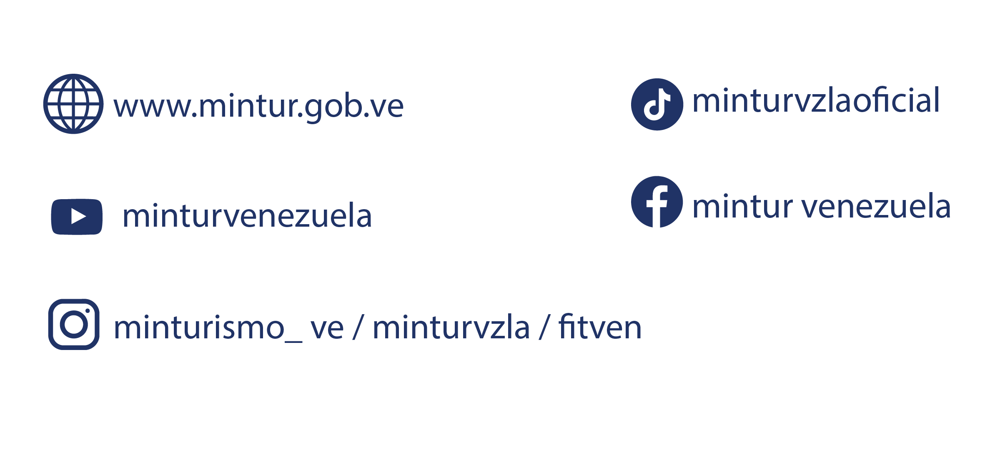
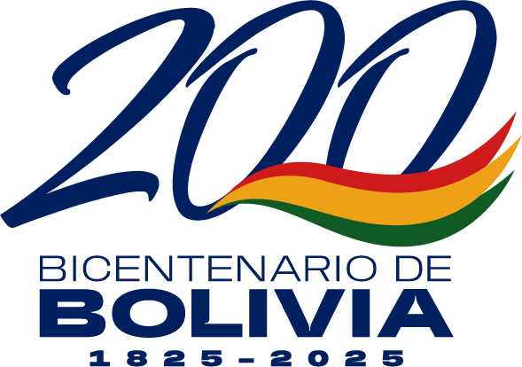
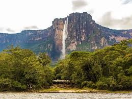
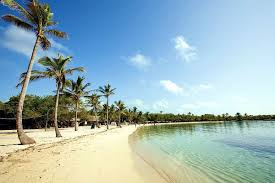
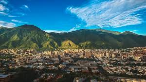

Descubre los destinos más espectaculares de nuestra tierra con total accesibilidad y servicios adaptados a tus necesidades.
Diseñamos tu experiencia personalizada por toda Venezuela.
Salidas programadas con asistencia técnica especializada.
Circuitos verificados para movilidad reducida.
Explora nuestras costas y archipiélagos sin barreras.
Seleccionamos los mejores rincones de Venezuela con infraestructura garantizada.

Disfruta de la majestuosidad del Salto Ángel con traslados adaptados y alojamientos de primer nivel en el corazón de la selva.
Ver Itinerario
Cayos con pasarelas de madera, sillas anfibias y personal capacitado para que vivas el Caribe venezolano sin límites.
Ver Itinerario
Un recorrido por el centro histórico, el Teleférico Warairarepano y los museos más emblemáticos con accesibilidad total.
Ver Itinerario"Pensé que nunca podría ver el Salto Ángel de cerca. Gracias al equipo de MINTUR, la logística fue perfecta y pude disfrutar de la maravilla del mundo."
"La playa en Morrocoy fue una sorpresa increíble. Las sillas anfibias funcionan de maravilla y el personal es extremadamente amable y atento."
"Viajar en grupo con Inatur nos dio la seguridad que necesitábamos. Todo el viaje estuvo cronometrado y sin barreras arquitectónicas."